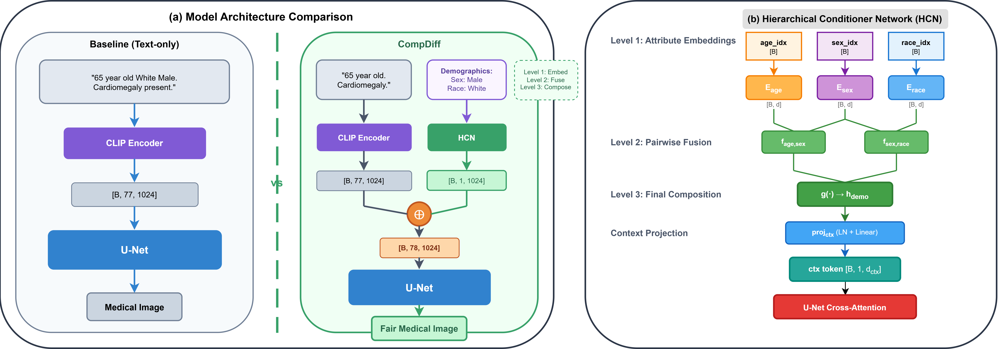

CompDiff: Hierarchical Compositional Diffusion for Fair and Zero-Shot Intersectional Medical Image Generation
Under review at MICCAI 2026
1 Institute of Data Science, Maastricht University · 2 Dept. of Advanced Computing Sciences, Maastricht University · 3 VITO, Belgium
Abstract
Generative models are increasingly used to augment medical imaging datasets for fairer AI. Yet a key assumption often goes unexamined: that generators themselves produce equally high-quality images across demographic groups. Models trained on imbalanced data can inherit these imbalances, yielding degraded synthesis quality for rare subgroups and struggling with demographic intersections absent from training. We refer to this as the imbalanced generator problem. Existing remedies such as loss reweighting operate at the optimization level and provide limited benefit when training signal is scarce or absent for certain combinations. We propose CompDiff, a hierarchical compositional diffusion framework that addresses this problem at the representation level. A dedicated Hierarchical Conditioner Network (HCN) decomposes demographic conditioning, producing a demographic token concatenated with CLIP embeddings as cross-attention context. This structured factorization encourages parameter sharing across subgroups and supports compositional generalization to rare or unseen demographic intersections. Experiments on chest X-rays (MIMIC-CXR) and fundus images (FairGenMed) show that CompDiff compares favorably against both standard fine-tuning and FairDiffusion across image quality (FID: 64.3 vs. 75.1), subgroup equity (ES-FID), and zero-shot intersectional generalization (up to 21% FID improvement on held-out intersections). Downstream classifiers trained on CompDiff-generated data also show improved AUROC and reduced demographic bias, suggesting that architectural design of demographic conditioning is an important and underexplored factor in fair medical image generation.
Method

Intersectional Gallery
Generated chest X-rays across age × sex × race/ethnicity intersections. Use the toggle to compare Baseline Stable Diffusion, FairDiffusion, and CompDiff.